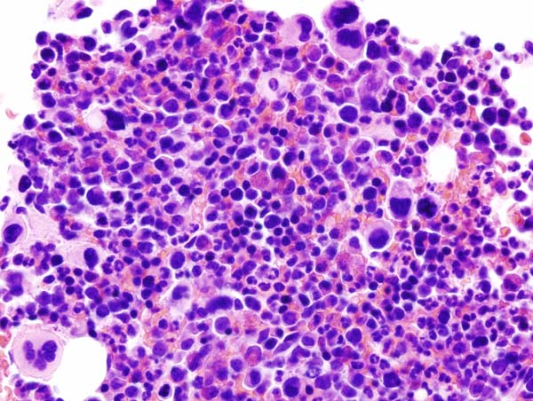

疾病 血液
ET ｜ 原發性血小板增多症 · Essential Thrombocythemia 筆記更新 2026-07-26· 整理狀態：可用
加入閱讀清單 其他名稱 3 ET · 原發性血小板增多症 · Essential Thrombocythemia
一句話總覽
經典 MPN 中「主升＝血小板 」的一支，同樣由 JAK2／CALR／MPL 三重奏驅動。臨床在血栓與出血之間擺盪 ：中度升高偏血栓，極高時反而因後天性 von Willebrand 症候群 出血。診斷前務必先排除反應性血小板增多。
30 秒行動卡
診斷關鍵 ：持續性 血小板 ≥450×10⁹/L ＋ 骨髓大型成熟多分葉巨核細胞 增多 ＋ JAK2／CALR／MPL 之一
治療骨架 ：依血栓風險分層——低危觀察 ± Aspirin ；高危 Hydroxyurea↗ ＋ Aspirin
絕對不可 ：血小板極高（如 >1000–1500×10⁹/L）又在出血時，貿然只給抗血小板而不驗 vWF
定義與定位
項目
重點
本質
克隆性 MPN，巨核細胞系增生 → 持續性血小板增多
好發族群
中老年為主；另有一個年輕女性 的小高峰
分類位置
慢性 × 髓性 → MPN，Ph 陰性 ；見 Hema Category
三兄弟定位
PV ＝紅血球｜ET＝血小板 ｜PMF ＝纖維化，共用 JAK2／CALR／MPL 三重奏
病因與機制
flowchart TD
A["JAK2 V617F<br/>CALR 或 MPL 突變"] --> B["JAK-STAT 持續活化<br/>不需 TPO 訊號"]
B --> C["巨核細胞增生<br/>血小板大量產生"]
C --> D["微循環阻塞<br/>頭痛、肢端紅痛"]
C --> E["動靜脈血栓"]
C --> F["血小板吸附<br/>大型 vWF 多聚體"]
F --> G["後天性 von Willebrand<br/>症候群 → 出血"]
classDef key fill:#263238,stroke:#000,color:#fff,font-weight:bold
class G key
筆記中的流程與關係 一條線推出全部處置
同一個「血小板太多」，中等量造成血栓 、極高量把 vWF 吸走而造成出血 。決策因此不是看數字給藥，而是先問「病人現在偏血栓端還是出血端」：偏血栓 → aspirin ± 降細胞；偏出血 → 先降細胞、停抗血小板。

ET 骨髓：可見大型、成熟巨核細胞增加並鬆散成簇，核多分葉呈 staghorn 外觀；背景仍保留造血結構，沒有 overt PMF 那種緻密成簇、bulbous atypia 與明顯纖維化。Source: Wikimedia Commons — Essential thrombocythemia (2) （CC BY-SA／GFDL，詳見來源頁）。
臨床表現
典型 ：多為健檢意外發現血小板升高，無症狀提示性 ：微循環症狀——頭痛、視覺閃爍、肢端紅痛（erythromelalgia，對 aspirin 反應好） ；輕度脾腫少見但重要 ：極高血小板時的黏膜出血 （後天性 vWF 症候群）；動靜脈血栓含內臟靜脈；懷孕併發症
→ 相關主訴流程：Thrombosis↗ 、Bleeding↗
診斷
診斷條件
內容
主要條件
① 持續性血小板 ≥450×10⁹/L ② 骨髓大型成熟多分葉巨核細胞 增多、無顯著纖維化 ③ 不符合 PV ／PMF ／CML ／MDS ④ 有 JAK2／CALR／MPL 突變
三重奏基因
JAK2 最常見；CALR 多見於 JAK2 陰性者；MPL 較少 。三陰性 時需其他克隆性標記，或徹底排除反應性
必查
鐵蛋白、CRP／ESR （找反應性）；BCR::ABL1 （排除 CML）
要開的檢查 ：CBC with differential↗ 、Peripheral blood smear↗ 、Bone marrow biopsy↗ 、Cytogenetics FISH↗
鑑別診斷
要排除的
支持它的線索
怎麼排除
反應性血小板增多 （最常見）缺鐵、感染／發炎、術後、脾切除、惡性腫瘤
鐵蛋白、CRP／ESR；矯正病因後血小板回落
PV Hb／Hct 也升高（缺鐵時可被掩蓋 ）
血清 EPO、鐵狀態；補鐵後 Hb 竄升要重想 PV
早期（prefibrotic）PMF
巨核細胞異型、緻密成簇 ，網狀纖維已開始增加
骨髓切片形態 是唯一分辨方法
CML 可以血小板升高表現，WBC 常高、嗜鹼球↑
BCR::ABL1
治療
情境
處置
全部病人／低危
控制心血管危險因子；觀察 ± 低劑量 Aspirin
高危（年長、曾有血栓）
Hydroxyurea↗ Aspirin
年輕／懷孕／不耐 hydroxyurea
Interferon alfa↗
極高血小板併出血 先降細胞、暫停抗血小板 ，並驗 vWF 活性
併發症與預後
要盯的併發症 ：Thrombosis↗ （動、靜脈）、Hemorrhage↗ （後天性 vWF 症候群）、後 ET 骨髓纖維化（見 PMF ）、少數轉 AML 預後 ：MPN 三兄弟中最好 ，多數接近常人壽命預後因子 ：年齡、既往血栓、白血球升高、驅動基因（CALR 型血栓風險低於 JAK2 ）
禁忌與陷阱
絕對不可
情境
絕對不可
為什麼
該做什麼
血小板極高（如 >1000–1500×10⁹/L）＋黏膜出血
貿然只加抗血小板或抗凝
此時多為後天性 von Willebrand 症候群 ，抗血小板會加重出血
驗 vWF 活性 ；以降細胞為主，暫停 aspirin
尚未排除反應性
直接當 ET 給細胞減少治療
缺鐵／發炎造成的血小板增多不該化療
先驗鐵蛋白、CRP 與 BCR::ABL1，找感染／腫瘤
單次抽血偏高
立刻下 ET 診斷
ET 要求持續性 升高
間隔重驗確認
常見錯誤
把「血小板數字」當治療目標——ET 治療是為了降低血栓事件 ，不是把數字壓正常。
忘了 ET 也會出血，看到出血就認定是別的病。
缺鐵掩蓋了 Hb，把其實是 PV 的病人診斷成 ET。
骨髓切片沒看纖維化分級，漏掉 prefibrotic PMF 。
相關連結
SOURCE & CONTEXT
來源與原始筆記 依 [[Hema Category]] 展開；WHO HAEM5（2022）
下載這篇 Markdown ↗ 網站保留原筆記的內容與整理狀態。